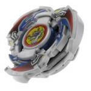

Driger G
| Driger Gatling | |
|  | |
| Number: | A-94 |
|---|---|
| System: | EG System |
| Type: | Attack |
Contents
Attack Ring (AR): Triple Tiger
- Weight: 6.2 grams
Triple Tiger takes the form of three tiger heads trailed by long sloped sections which reach down to the bottom of the Weight Disk, terminating at fairly tall vertical contact points. These slopes face clockwise, starting just below the top of the Weight Disk with a much steeper angle, which reaches up to slightly above normal Attack Ring level. This is followed by a short but completely vertical descent and then by another, shallower slope.
This means Triple Tiger actually has comparatively short Upper Attack slopes, and though their angle still allows them to exhibit very effective Upper Attack, the Attack Ring is perhaps more notable for its Smash Attack. This is due to the excellent angle of its contact points, which focus the full force of the Beyblade's motion behind every hit; serving to lower the Recoil it would otherwise suffer as a result of its large contact points. In addition to this, along with Driger V2's Upper Claw it is one of two competitive Smash Attack ARs which hit at a height below Attack Ring-level, allowing the use of taller Bases such as Customize Grip Base without any issues in terms of making contact with opponents.
Again along with its predecessor, it is one of two Attack Rings that is considered Top Tier for both Upper Attack and Smash Attack, and is highly effective at combining both. It does this to the point that while Upper Dragoon and Triangle Wing are both better at pure Upper Attack, and Attack Ring Setups such as Dragon Breaker with War Bear's SAR are better at pure Smash Attack, Triple Tiger holds its ground in each type of Attack customization by incorporating elements of the other, providing incredible versatility.
The one area where Triple Tiger is not particularly versatile is spin direction. Unlike Upper Dragoon and Triangle Wing, but like most Smash Attack ARs, Triple Tiger is only effective in a single spin direction. Its left spin contact points, namely the flat edge at the top of the sloped section and a small Force Smash slope beneath it, create large amounts of Recoil and little else. While this does hamper its overall versatility, it is a necessity to allow its Smash Attack contact points to be adequately exposed.
Despite this small concern, Triple Tiger is undeniably one of the best and most versatile Attack ARs of the generation, its excellent design allowing it to perform extremely well in both Smash and Upper Attack, and creating a true hybrid Attack Ring that provides excellent performance in any right spin Attack setup. In addition to this it is generally available for significantly cheaper prices than other Top Tier Attack ARs, aside from the arguably less useful Eight Spiker.
Use in Smash Attack Customization
- AR: Triple Tiger (Driger G)
- WD: Wide Defense
- SG: Neo Right SG
- SG Core: North/South Magnecore
- SP: Survivor Ring (Dark Series)
- BB: Customize Grip Base (Dragoon V2)
Customize Grip Base is an excellent Blade Base, however its tall height often makes it difficult for most Attack Rings to reliably make contact with opponents. Triple Tiger is one of two top tier Smash Attack AR's that can compensate for that height effectively, and compared to the other, Driger V2's Upper Claw, it boast excellent synergy with Survivor Ring, which, while not a common part, is much more easily obtained than the outrageously rare Twin Guard, which Upper Claw must rely on for similar Smash Attack support. In addition to this, Wide Defense provides an excellent weight distribution for Smash Attack, and combined with the Magnecore, controls any Recoil produced. This makes for a highly potent Smash Attack customization.
Use in Upper Attack Customization
- AR: Triple Tiger (Driger G)
- WD: Ten Heavy
- SG: Neo Right SG
- SG Core: Heavy Metal Core (Metal Driger)
- BB: Storm Grip Base (Dragoon S)
While its slopes are not as long as those of Upper Dragoon or Triangle Wing and nor do they reach quite as low, Triple Tiger still exhibits effective Upper Attack, as well as adding some Smash Attack which can be useful to finish off destabilised opponents, making it just as effective as either of those ARs in a standard Upper Attack custom such as this. The rest of the customization is standard for Upper Attack, Ten Heavy and the Heavy Metal Core are used to maximise the ability to maintain a high RPM, and the extremely low height of Storm Grip Base allows Triple Tiger to reach under opponents and execute effective Upper Attacks, making the customization very deadly.
Weight Disk (WD): Ten Balance
- Weight: 14.9 grams
See Ten Balance.
Spin Gear (SG): Right Engine Gear (Metal Semi-Flat)
- Weight: 11.0 grams
Right Engine Gear (Metal Semi-Flat), despite its name, has a relatively flat tip - like Dranzer V, the Semi-Flat classification seems to pertain to the smaller diameter rather than any significant bevelling of the edges. The tip shape itself provides reasonably aggressive movement and decent speed for Attack, and the use of metal provides solid Survival compared to most other Attack type tips. On the whole however, the tip is unexceptional and outclassed by a great many more effective alternatives, such as SG Metal Flat Base (Gaia Dragoon V Version). The Engine Gear gimmick provides an additional burst of speed at a time determined by the Blade Base, however its uncontrollability, coupled with the rather poor traction of the tip, means this is rarely of any use, and in fact sometimes poses a Self-KO risk, and the tall height it necessitates severely damages the ability of most Attack Rings to make effective contact with opponents. Like most Engine Gears, this part is considered useless.
Blade Base (BB): First Clutch Base (Driger G Version)
- Weight: 7.3 grams
Driger G?s Blade Base is a rather plain, circular Blade Base, with a clutch that activates the Engine Gear at the start of the battle. Its smooth, sloped underside and round shape provides some Life After Death, but not to the degree of competitive notability, and its bulk prevents any offensive use. Its round shape makes it better than most Engine Gear Bases as it uses its bulk more effectively, but it still fails to find any use for this. The only use worth mentioning is some small ability in Circle Survivor Defense Customizations, however it is outclassed for this purpose by Wolborg 4's own Normal Base (Wolborg 4 Version), and therefore sees little use for this either. As such, like most Engine Gear Bases, First Clutch Base (Driger G) is considered mediocre and sees little to no use in serious competitive customization.
Uncustomized Performance
Driger G carries on a common trend in Driger Beyblades in that it performs well without any customization. While nowhere near Driger V2's incredible uncustomized performance, Driger G is by far the best cheap Beyblade on the market out of the box. This is almost entirely due to its excellent Attack Ring, which compensates for the height of the Engine Gear, and works well with the aggressive movement it produces. In addition to this, while not the optimal choice (both Wide Defense and Ten Wide would be better), Ten Balance supports suitably aggressive movement. This allows Driger G to be a decent Attack type Beyblade uncustomized, with some additional Survival that can catch more Defensive opponents off-guard, meaning that despite its reputation as "cheap", Driger G should not be underestimated in a competitive situation.
Gallery
Other Version
- Driger G - Hasbro Customize Engine Gear Version (Black) ? comes with Right Customize Engine Gear and Metal Semi-Flat CEW.
- Driger G - Tournament Prize Versions (Gold, Silver and Bronze)
Overall
Driger G comes with a useful Weight Disk and an incredible Attack Ring, which is good enough even to compensate for the mediocre Blade Base and Engine Gear and provide strong performance out of the box. Coupled with excellent value for money, Driger G is a great Beyblade for beginners and experienced Bladers alike. All serious Bladers should own this Beyblade.